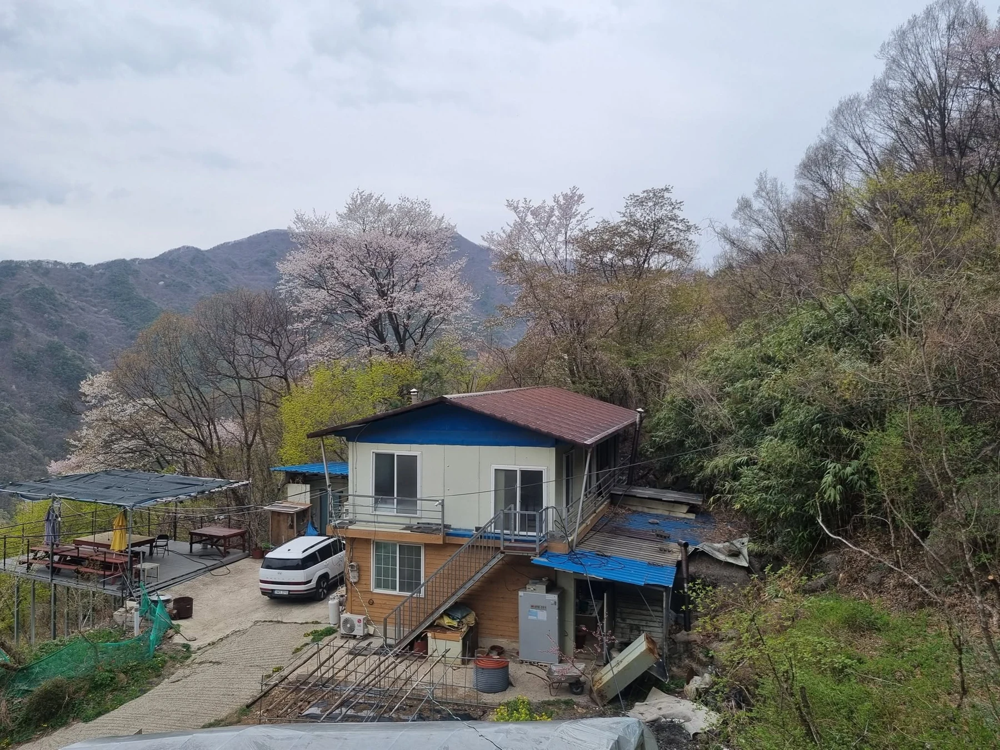
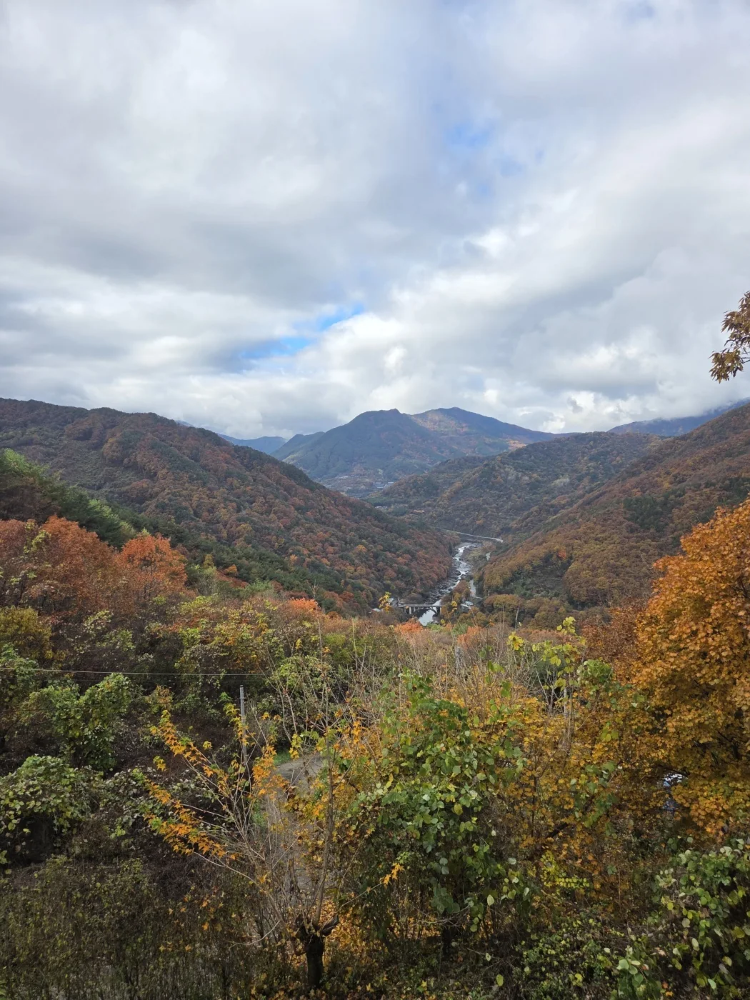

봄SPRING · 실제 촬영FARM GALLERY
지리산 마적대, 농원의 풍경
실제 농장 사진을 클릭하면 크게 보고 이전·다음 사진으로 넘길 수 있습니다.
 여름SUMMER · 실제 촬영
여름SUMMER · 실제 촬영
가을AUTUMN · 실제 촬영 겨울WINTER · 실제 촬영
겨울WINTER · 실제 촬영실제 농장 사진을 클릭하면 크게 보고 이전·다음 사진으로 넘길 수 있습니다.

봄SPRING · 실제 촬영여름SUMMER · 실제 촬영
가을AUTUMN · 실제 촬영겨울WINTER · 실제 촬영